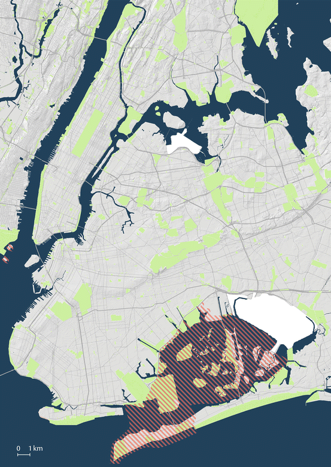
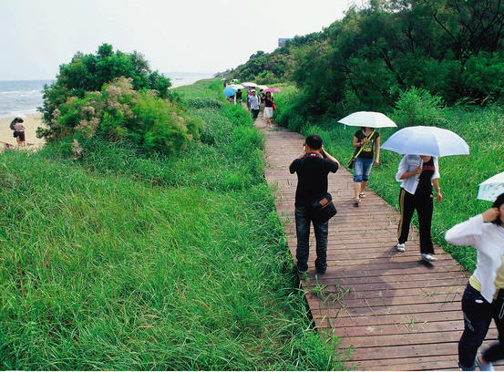
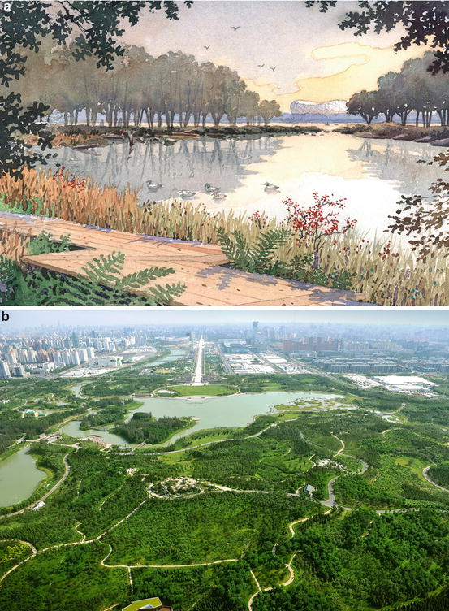
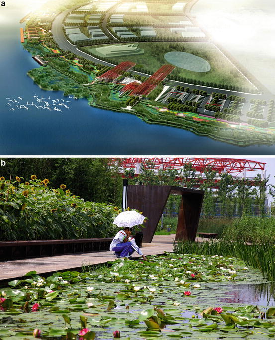
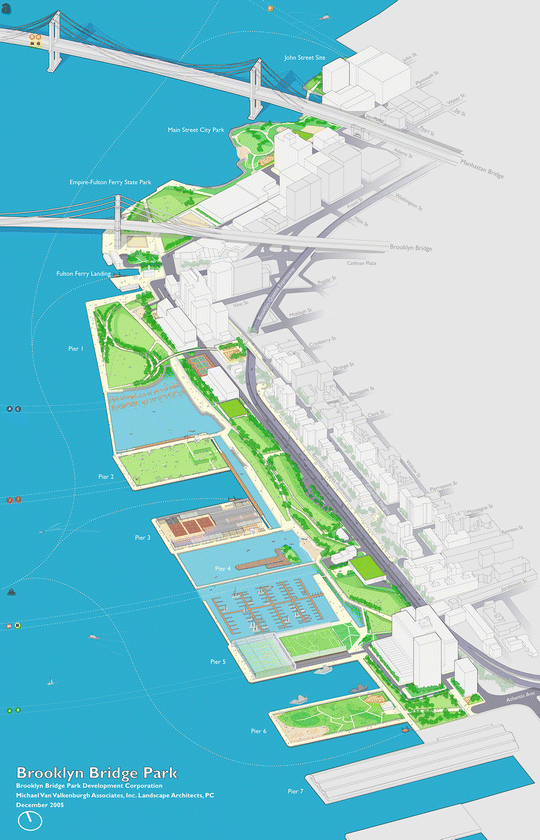
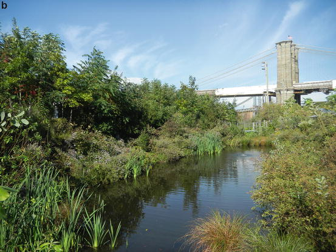
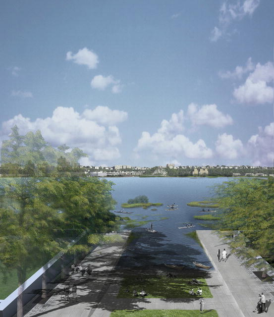
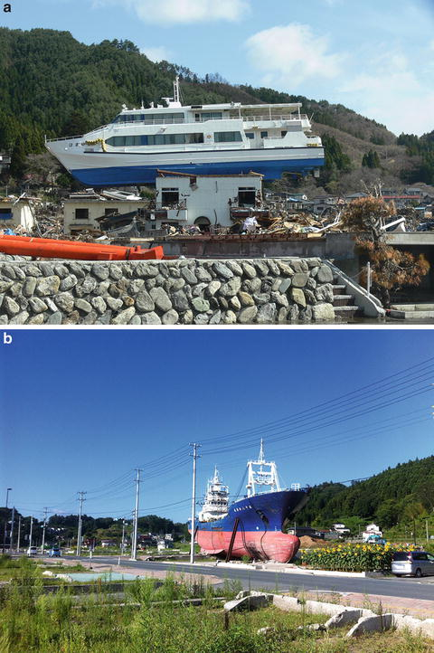
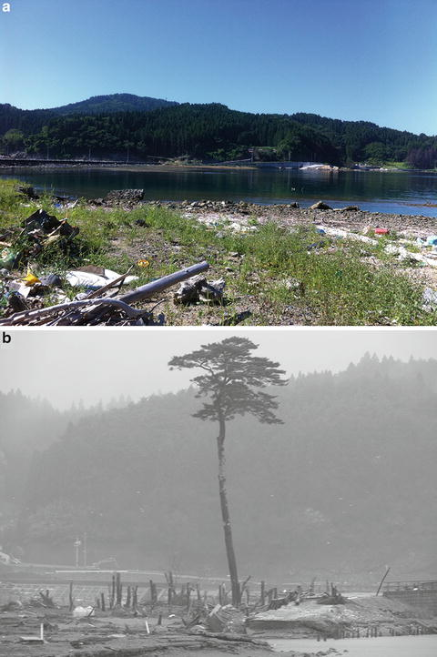
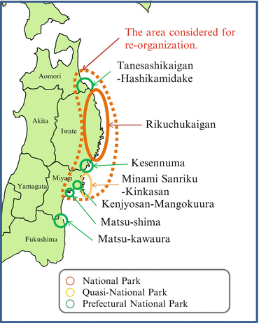

31.1 Adding Restoration to Urban Environmental Improvements
31.1.1 The Big Apple, Still Ripening
It’s been called “Delirious New York,” this largest of United States metropolitan areas (Koolhaas 1978). This is a place of great tides of human movement (White 1949). Tides of millions, though the decades, flow in from around the world, creating a great immigrant center. Tides of people, every day, commuting, swishing back and forth from the suburbs, going from bedroom to board room, then return. A slow incremental tide of strivers moves in from other parts of the world, dreaming of rising success in finance, the arts and communication, quickening the frantic throb that makes the city alive. It is the same pattern now found throughout the urban world, now the lifestyle of most humanity.
All the souls that swell these urban tides throughout the world must be supported by an ecological foundation that the local governments must somehow supply. The resources to fulfill the realized multidimensional niche of the human population must be present, the ecology profession would say, but who would respond to that Commandment? There are millions of people in this urban world now. Urbanization continues, and five billion people will be urban by 2030 (Seto et al. 2012), crowding streets and pressuring the infrastructure that must support this buzzing lifestyle. The tides may overflow the foundation.
What can the ecological professions offer to this horde? How can the principles of ecology be used effectively to serve these people, if not the millions of other animals that pass through the airspace above and the waters around, that shape a city’s borders?
The financial and artistic elites of our major cities receive much attention, but somehow the professions that supply sustainable services must push their way into the spotlight. In New York, America’s major metropolitan area, can Broadway—the Great White Way—get a little greener?
Ecological restoration of city parcels can add services to urban centers, but re-establishing ecological links to cities must first address many stresses that have been caused by human activities.
31.1.2 Justifying Investment
Ecological restoration is an investment, not an expense. Ecological restoration was originally seen by many scientists as a way of repairing small scale damage to landscapes tattered by human land uses. Farms get abandoned, and soil and biodiversity must be returned to an approximation of their original structures. Development scars the edges of an intact or severed watershed, and that edge must be sealed again with a sustainable biotic community. Invasive species increase in numbers, changing community organization, and those species must be managed to return towards the original species richness and dominance relationships.
In recent history, ‘nature’ has been popularly envisioned as an entity distinct from the city, a pristine place located far away from human influence, urban infrastructure and asphalt paved streets (Chap. 2). This attitude is slowly changing. Planners and government agencies now see nature in the city as having value in ecosystem services, not just beauty. These services that are not directly voted upon by city councils, but give real value, replace precious tax dollars in a city budget.
31.1.3 Defining the Ecological Target

Fig. 31.1
Natural areas in New York City are scattered throughout the city and include forested, salt marsh, aquatic and marine habitats (in green). The hatched areas are federally protected as the Gateway National Recreation Area, and include the Jamaica Bay Wildlife Refuge. Grey areas are paved airports (Modified from Open Accessible Space Information System (OASIS) at www.OASISnyc.net. Published with kind permission of © Open Accessible Space Information System (OASIS) at www.OASISnyc.net 2013. All Rights Reserved) (Color figure online)
There are detailed species lists for many of the world’s urban floras (Clemants 2003). These urban areas have complex habitats, not just human-defined industrial and residential zones. In most cities, many landscapes are highly maintained, mowed, used for active sports, and crisscrossed with hardened walkways, but pockets of unmanaged landscape remain unkempt, urban thickets holding on within the crowds. It is here that ecological community patterns develop, albeit of a species mix that is idiosyncratic to local conditions, with elements introduced from many continents (see Chap. 5 for additional discussion on patterns and trends in urban biodiversity).
For example, in the New York metropolitan area, there are over 11,300 ha of public park land in the city alone (Fig. 31.1) (see Chap. 19). Plant identity and distribution here has been studied for over 250 years. Many of these plant surveys include relative numbers and distributions, allowing comparisons of the old and the present (e.g., Robinson et al. 1994; Aronson et al. 2007). In just one borough of New York, 443 native plant species were lost and 481 non-natives gained from 1879 to 1991. Decisions to determine what habitats can be restored are extremely difficult in these dynamic urban areas. The long history of species losses is evidence that conditions are no longer favorable to much of the original biodiversity. The list of species that can maintain their population structures into the future is not yet known.
The appropriate ecological target for restoration rests on many sources of information (Swetnam et al. 1999; Egan and Howell 2001; Gargiullo 2007). The extreme degradation of urban areas may make this sourcebook of information a fictional account of future biodiversity. In this sense, the past is not prologue. Even conserving the species that remain will be difficult with increasing human population pressure and the impact of the modern lifestyle (McKinney 2002).
Physical, chemical, and biotic stresses are rampant in urban areas. However, successful examples of adding habitats to urban centers can be found throughout the world. Restoration ecology actions can supply ecosystem services to counter these stresses. Restored urban habitats may be different from historic local vegetation because of continuing human-associated activities. However, even modified habitats can add value to human population centers. We summarize here the variety of stresses that urban restoration ecology must confront and give case histories of representative solutions.
31.2 From Urban Stresses to Solutions
31.2.1 Abiotic Stresses That Accompany Urbanization
31.2.1.1 Fragmentation
Long-term urban development and a growing population have erased the original physical landscape that supported our biota. The continued addition of homes, workplaces, roads, power and water facilities, athletic fields, dumps, cemeteries, and the whole witches’ brew of infrastructure have together diced the original intact habitats into a fine-grained mix of isolated parcels (Gilbert 1989; Forman 1995). The ability of any species to maintain populations in such a landscape depends on the size, shape, adjacent conditions, and the soil quality of each remaining patch created by this long history of building. For example, the well-documented ecological “edge effect” comes from eliminating moist, shady, extensive habitat pieces around isolated fragments. The modified environment favors only those species that bask in well-lit, hot, and dry urban environments (Cadenasso and Pickett 2001). Many animal species are driven to nest and feed on the edges, increasing attacks by many predators that patrol these habitat boundaries (Askins 2000). Small, dissected habitats are sinks for our native biota as often as they are refuges.
Fragmentation also lowers movement of species from place to place, weakening metapopulation connections. Interest in restoring corridors among fragments in urban areas is high (Bennett 2003), but this is difficult when potential connection routes are dominated by other land uses or important infrastructure needs. Adding parcels of habitat within urban centers can lower landscape fragmentation.
Case history: New Zealand – As an isolated island, New Zealand developed an endemic flora and fauna which is remarkable, but fragile. Introductions of new plants and animals by Polynesian and then European settlers have caused enormous changes in biodiversity and habitat structure (Mooney and Hobbs 2000). However, there are recent urban restoration initiatives which are challenging old problems with new attitudes.
In Hamilton City, on the North Island, a series of deep gullies marbles through the fabric of urban residential areas. Many small patches of native vegetation, averaging 1.1 ha each, remain in the city, from upland forest to emergent herbaceous vegetation in the wet lowlands. Restoration of the gully network is now recognized as a way to add environmental, aesthetic, scenic, and cultural values to the city (Clarkson and McQueen 2004). The project leaders term their work “reconstruction,” as so much of the original biota is lost and cannot be completely “restored” (Clarkson et al. 2007). Reintroduction of some native plant species additionally will provide materials for traditional medicine of Maori citizens. Even aquatic life in the lowland streams will benefit from the improved water quality and diminution of siltation that riparian plantings provide. Support for these efforts on public and private land comes from City Council initiatives and pressure from international agreements. Similar urban initiatives are being undertaken in Australian cities where many nonprofit organizations participate in producing native plant materials for urban restoration projects and doing the actual planting (Buchanan 1989).
Of particular interest in the New Zealand example is the emphasis on the landscape ecology advantages of local urban initiatives. In many cities, home gardens are the source for invasive plant species, which can sweep through wildlands. In Hamilton, residents are encouraged to use indigenous plant species in hedges, public parks, and home gardens. These effectively increase population size and range of these species in adjacent natural areas and serve as corridors for the movement of native animals that forage on these plants. The indigenous plantings in home gardens are also sources of native seeds that can be dispersed into the small habitat remnants, replacing the invasive seed shadow from introduced horticultural species, which are so common in many other urban settings (Clarkson and McQueen 2004). For example, the privet (Ligustrum spp.) hedges of Australia and New Zealand have led to massive invasive problems in urban moist soils (Daehler 2003).
At the wider scale, there are ecological links between city restorations and the surrounding agricultural and wildland biodiversity (Green and Clarkson 2005). Many native animals and plants are scattered through agricultural lands near cities and these do help support ecosystem services for farming. In New Zealand, there is a drive towards “sympathetic management” of these production lands to support regional needs for increased biodiversity (Green and Clarkson 2005). In these ways, there are sustainable practices which jointly support urban habitats and surrounding commercial activities. There is a serious need for better monitoring to show the precise value of this synoptic approach so that it may be emulated.
One of the advantages of urban restoration efforts is the educational value of small urban preserves so that people can understand the importance of native biodiversity to support regional agricultural practice. Additional work in New Zealand forest plantations has shown how they act as linkages among restored urban preserves, which increases the value of forestry lands for wider societal needs (Norton 1998). Small urban restoration efforts are biotically linked to landscape ecology principles and regional sustainability improvements. Reduction of fragmentation may have economic and well as biodiversity value.
Case history: Hebei, China – Similarly, restoration of habitat has been completed in coastal Hebei Province—a new 60 km2 park was built along the marine zone of Qinghuangdao City (Padua 2013). Although this city has a large tourist presence, the coastal zone was degraded by rampant development and habitat fragmentation. The new park is 6.4 km long and restores native coastal vegetation to manage erosion and to supply habitat for coastal zone wildlife. The area had been a national bird reserve, and a dozen of small coastal ponds were installed to serve as resting and feeding grounds (Padua 2013). The concern for improving visitor facilities was met by a series of “floating” boardwalks resting on the new dunes and new grades (Fig. 31.2). In this way, visitors could see the complex ecology of the restored beach on the way to a new Wetland Museum that explains the area’s wildlife biodiversity. Creating a new tourist destination in conjunction with lessening ecological fragmentation helps justify the project’s cost and advances the social need of public understanding of habitats for the city.

Fig. 31.2
Restored beachfront habitat at Qinghuangdao City, Hebei Province, China (Photographed by and published with kind permission of © Turenscape 2013. All Rights Reserved)
Case history: Beijing, China – Habitat fragmentation can be lessened by replacing industrial land-use with functional habitats. The 2008 Olympic Summer Games received special attention from ecologists and landscape architects. The athletic facilities were surrounded by a new lake, wetlands, meadows, and diverse woodlands (Fig. 31.3). The master plan from Sasaki Associates of Massachusetts addressed the extensive urban planning needs of an Olympic event: many new facilities that had to be constructed, new habitat parcels that could be enjoyed after the games ended, and an economic vision to transform the entire site into a public and convention center. A former light industry area was cleared and transformed into a Forest Park, near the Fifth Ring Road of Beijing (Dong et al. 2006). The many native plant species introduced into the new Park can spread into the surrounding neighborhoods to restore the native diversity, which previously had been long gone. In this way fragments can be continually linked.

Fig. 31.3
(a) Constructed wetlands and boardwalks offer educational, aesthetic, and wildlife values for Beijing. This element of the Olympic Forest Park lies to the north of the National Stadium of the 2008 Olympic Games (Rendered by and published with kind permission of © Sasaki Associates 2013. All Rights Reserved) (b) A view over the Beijing Olympic Forest Park’s southward along the Beijing Imperial Central Axis, showing the man-made complex of woodlands, meadows, lake, islands and wetlands, and the landscape connection of the Park to the rest of the Olympic Green and venues (Photographed and published with kind permission of © Beijing Tsinghua Urban Planning & Design Institute 2013. All Rights Reserved)

Fig. 31.4
(a) Shangai Houtan Park rings the city’s river and adds habitat and urban agricultural lands to a former polluted and industrial zone. (b) Access to the horticultural and habitat plantings and the river front are now possible through a new network of public walkways (Rendering and photograph by and published with kind permission of © Turenscape 2013. All Rights Reserved)

Fig. 31.5
(a) Brooklyn Bridge Park forms a thin band of new habitat along the eastern edge of the East River of New York City. This land was formerly a commercial port zone for over 300 years (Rendered by and published with kind permission of © Brooklyn Bridge Park Conservancy 2013. All Rights Reserved) (b) New ecological habitats and structure at the Brooklyn Bridge Park, NY (Photographed by and published with kind permission of © Steven N. Handel 2013. All Rights Reserved)

Fig. 31.6
“Marine Streets” reconfigure the ends of urban streets that are adjacent to saltwater into slowing, sloping infrastructure elements. These include coastal habitats of salt tolerant plants. The street ends are public park amenities that are resilient to the expected increasing changes in ocean levels near our cities (Reproduced from Wilks 2011. Published with kind permission of © Ecological Restoration 2011. All Rights Reserved)
The Park was placed on the central geographic axis of Beijing, which lines up with the Emperor’s throne in the ancient palace in downtown Beijing. This placement emphasizes the importance of this Park to the cultural life of Beijing and brings it special attention for Chinese citizens. Natural history combined with cultural affection highlights the new ecosystem services which have been added in conjunction to the Olympic Games. Together with the coastal ecological parks, Beijing’s Forest Park is an expression of the value of ecological structure to the burgeoning new Chinese urban landscape. The joining of ecological principles with landscape design is a model of interdisciplinarity.
Case history: Budapest, Hungary – Similarly, in Budapest, Hungary, the concern was to add a network of green spaces throughout the two sides of the ancient city (URGE-Team 2004). The topography is diverse, and commercial development had eliminated a variety of habitat types (Beynon 1943). A green belt system both protects remaining green spaces by acting as a buffer against development stresses, and allows for additional connected and restored green hectares. Some existing areas will be enlarged so that a variation in scale of green spaces is achieved. Some park areas, such as Szent Istvan Park, will emphasize public recreation, while others, such as Orczy Garden, will have a passive horticultural goal.
In an old, densely populated city, the restoration goals may not allow a full complement of woodland or meadows species to survive. However, incremental increases of some native populations of plants and animals and their subsequent ecological service potential may have increased political support for ecological structure when combined with cultural advantages.
31.2.1.2 Suppression of Disturbances
Many species require early successional ecological conditions. These are driven by disturbances on the landscape, originally of natural causes. Fire, the pounding of a migrating herd, and seasonal flooding played their role in creating temporarily open land. This is quickly occupied by some fast invading species before a subsequent competitive battle replaces these pioneers with other species.
People create disturbances with almost everything they do, but it’s a different kind from natural events, and rarely supports the life history needs of native early successional species. Before we can restore meadows, shrublands, and herbaceous marshlands, we must find a way to reestablish disturbance regimes. Not only is this practically difficult, it is often legally prohibited. For example, in many cities, purposely lit fires are prohibited so that air pollution does not increase. Those meadow species which require a landscape recently burned now have no place to become established. Similarly, those wetland habitat herbs which require seasonal flooding for recruitment of new seedlings are the city’s herbaceous homeless; stream and riverine edges are more often concrete and stone riprap than exposed alluvial soil. This infrastructure is to curtail erosion but bioengineered options are possible. On streambanks, use of fascines and life stakes are more appropriate options (Schiechtl and Stern 1996). Plowing or disking of land to promote new microsites can be an acceptable urban alternative to fire. However, targets of restoration must be adjusted to allowing disturbance techniques within a city’s guidelines.
This is not to say cities are immune from large scale and natural disturbances that create their own new needs and trajectories. The study by Saito and Takeuchi on the 2011 East Japan earthquake and its massive effects (Box 31.1) offers a sober reminder that cities, for all their technology and modernity, are subservient to geologic forces. The Geopark being proposed for this region in Japan is restoration at a level few urban ecologists have considered in the past. However the lessons there are of humility for dwellers of coastal megacities and their environmental managers.
Box 31.1 Ecological Restoration After Natural Disasters: The Great East Japan Earthquake
Damage to Biodiversity and Ecosystem Services
The Great East Japan Earthquake and resulting tsunami of 11 March, 2011 have had significant direct and indirect impacts on ecosystem services in the affected area. In particular, most of the fishing villages along the Pacific coast endured catastrophic damage. Agricultural land such as paddy fields was also flooded by the tsunami, and livestock and agricultural industries suffered radioactive contamination from the Fukushima Daiichi nuclear plant disaster.
The inundated municipalities lost about 25 % of farmland for rice production and 5 % for other crops. There have been significant decreases in livestock due to the disaster, and to the decision to euthanize all livestock in the exclusion zone surrounding the Fukushima Daiichi nuclear power plant. Problems related to the safety of animal products are extremely wide-reaching and felt nationwide. It will take several decades for fisheries in the region to recover, with 21,589 ships, many fish farms, and fish processing facilities damaged by the tsunami (Box Fig. 31.1). Sea fisheries and fish farms in the study areas previously comprised 14 and 19 % of the national catch respectively.

Box Fig. 31.1
(a) Marine vessel carried to the roof of the local inn by the tsunami in Otsuchi, Iwate prefecture (24 April, 2011). (b) Large fishing vessel remained intact at the middle of the affected area of Kesennuma, Miyagi prefecture (20 August, 2012) (Photographed by and published with kind permission of © Osamu Saito and Kazuhiko Takeuchi 2013. All Rights Reserved)
Of the 83 km2 below the previous highest tidal level prior to the earthquake, 3 km2 were below sea level. However, due to ground sinking, the area below the highest tidal level and the area below sea level have changed to 111 km2 (a factor of 1.34) and 16 km2 (a factor of 5.3), respectively (Box Fig. 31.2a).
The destruction of one third of the 33 km2 of coastal pine forests in the region affected the tide prevention and sand erosion control services they provide (Box Fig. 31.2b).
Various cultural services have been affected, with damage to 17 % of the 1,357 cultural properties located in Aomori, Iwate, Miyagi, and Fukushima prefectures. The number of travellers visiting the region for multi-day trips over the annual Obon holiday (in mid-August) declined by 42 % compared to the previous year.

Box Fig. 31.2
(a) The former paddy field was completely inundated due to tsunami and ground sinking in Rikuzen Takata, Iwate prefecture (20 August, 2012) (b) Destroyed coastal pine forests in Rikuzentakata, Iwate prefecture. One survivor has been called “the miracle pine” that symbolizes resilience of the affected area (23 April, 2011) (Photographed by and published with kind permission of © Osamu Saito and Kazuhiko Takeuchi 2013. All Rights Reserved)
Rebuilding and Ecological Restoration
Much of the disaster-stricken area contains a range of typical Japanese satoyama (terrestrial) and satoumi (coastal) regions, especially the Sanriku coastal areas (the Pacific coast of northeast Japan). These traditional landscapes represent a balanced relationship between human beings and nature. However,
due to rapid urbanization, shifting resource needs, and industrialization, both satoyama and satoumi have declined in the last 50 years, thus affecting the coupled ecosystem services (for further discussion on satoyama and satoumi landscapes, see the local assessment in Chap. 8).
With fishers utilizing satoumi, and also cutting and using the wood from satoyama nearby, most local residents were involved in both farming and fishing. In these areas, satoyama and satoumi are connected by small rivers, and the linkage of forest–river–sea provides the community with the bounty of nature through material flow (e.g., nutrition). Given the recent abundance of forests and expansion of unmanaged forests (coniferous plantations) in upstream areas, the nature of satoumi in downstream areas has been distorted, and the linkages between agriculture, forestry, and fishery have disappeared.
In order to improve the resilience of these societies, the link between satoyama and satoumi needs to be strengthened. Planning amenity and recreational spaces for local residents and visitors would also provide safe places of refuge during natural disasters. The Sanriku coast boasted many national and prefectural parks whose facilities were destroyed during the disaster. Facing restoration of the destroyed parks, the Ministry of the Environment, Japan has been proposing a new type of national park which will further the aims of disaster prevention and mitigation, as well as the revival of the fishery industry (Box Fig. 31.3). The initiative aims to contribute to the recovery of these areas by reviving satoyama and satoumi and recreating linkages between forests, rivers, and the ocean. This new park is also expected to function as a “Sanriku Geopark,” preserving the memory of the earthquake and tsunami, and providing education on the geology and geography of a natural rias coastline. In addition, the development of various renewable energy sources including solar, wind and geothermal energy in satoyama and satoumi have been seriously discussed, in order to balance the needs of environmental protection and energy production.

Box Fig. 31.3
“Sanriku Reconstruction National Park Initiative” and existing national parks (Rendered by and published with kind permission of © Japanese Ministry of Environment 2013. All Rights Reserved)
Reviving Industries and Regional Communities
Even before the earthquake, the primary industry in the region was threatened due to an aging population and a decline in agricultural workers. Thus the revival of agricultural, forestry, and fishery industries cannot be carried out without measures to address the lack of human resources. There is a need to encourage private companies and other newcomers; to integrate production, process, and circulation; to revive recreation and tourism; and to promote high value-added industries. Fundamental restructuring of land use in the affected areas should be considered with a vision for future industries and society.
In the cities and villages affected by the March 11 disaster, reconstruction began with the transfer of housing to higher ground. This presents a good opportunity for compacting and re-zoning these areas, considering the changed needs of a shrinking and ageing population. In spatial planning for compacting and re-zoning the cities or villages, land which is highly vulnerable to natural disasters should be restored as agricultural land, woodland and wetland. In this context, the importance of the connections between various stakeholders in the local area should be emphasized. Workers engaged in the agriculture, forestry, and fishery industries expected to continue to be the main laborers in future. But all citizens need to be involved on an equal basis in the management of common resources, including those who are working in the government, private companies, non-governmental organizations, as well as urban residents.
The Diversity of the Region
The area affected by the 11 March disaster was much more extensive than had been expected, and each local community experienced varying degrees of damage. It is therefore impossible to construct a universal model for the revival of all the areas. Rather, a detailed examination of the link between the degree of damage and natural and social factors must be conducted, and then a plan developed in accordance with each specific natural environment and social capital. During the past several decades in Japan, public participation in city planning has been effectively introduced, bringing significant benefits due to the experience and enthusiasm of locals to engage in the development of their local community. A bottom-up approach is therefore needed in the construction of a vision for rebuilding the region, rather than a traditional top-down model. However, during construction after World War II, each local region was developed as a more or less similar or uniform landscape everywhere, without unique characteristics. In this sense, local diversification is a key for each region within the process of post-disaster rebuilding.
31.2.1.3 Physical Change
The concentration of hardscape in the city and the exhaust from thousands of cars and chimneys has created a heat island, raising the ambient temperature several degrees above adjacent rural areas (Alberti 2008) (Chaps. 1 and 25). The hotter air consequently heats the soil and waterways, changing relative abundances of organisms that are sensitive to these temperature regimes.
Building and rebuilding over the centuries also has modified the original soil structure (Bradshaw and Chadwick 1980). Fill brought in to elevate new structures is often mineral soil or construction debris and is inappropriate for healthy soil biota (Bullock and Gregory 1991). Piping of rain water and constriction of normal groundwater flows has significantly changed the rate and frequency of water movements in the remaining urban surficial stream corridors (Ehrenfeld 2000). This results in flashy and fast-moving flows after precipitation events and undercutting of stream banks. These actions destroy aquatic microhabitats needed for invertebrate and vertebrate reproduction.
In these ways, the physical world in the built city is completely different from the atmosphere, substrate, and hydrosphere that were the pre-urbanized landscape. A seed or juvenile of any native species that enters an urban world confronts novel conditions. Physiology, behavior, and life history events are challenged by the new physical environment. Again, targets of urban restoration ecology must be compatible with new conditions, not historic environments.
31.2.1.4 Combining Habitat and Infrastructure Needs
A case study of hydrology change and urban restoration can be found at Sweetbrook Park, New York City, where stream restoration rescued a flooded street in Staten Island. In 1964, the huge Verrazano-Narrows Bridge was opened and the human population of Staten Island tripled within 20 years. This was “delirious New York” at its fastest. The rapid urbanization overwhelmed the old infrastructure of water supply and many streets suffered from urban flash flooding. The usefulness of the remaining stream corridors as an element in stormwater management was considered.
Sweetbrook Park was the first element of the City’s Staten Island Bluebelt initiative (Eisenman 2005). The 49 km2 Bluebelt drainage area is ribboned by parcels of historic stream corridors that somehow escaped being placed in culverts. These streams are natural elements that can reduce flooding, improve water quality, and add an overlay of green space. The Bluebelt project restores wetlands, stream restoration, stilling basins, and connections to estuaries. 92 stormwater wetlands are included and the first one at Sweetbrook Road, completed in 1995, exemplifies the ecology-human interactions that can occur (Thompson 1998).
Sweetbrook is a narrow remnant of ancient New York habitat. Most of this stream was in pipes underground, but a 427 m section had escaped domestication. In 1994, the banks included tall, 1 m diameter oak trees, tulip trees, and maples. Scattered on the stream banks were small populations of ostrich ferns (Matteuccia struthiopteris), Jack-in-the-pulpits (Arisaema triphyllum), and other native wildflowers that had been exterminated over much of the island. Alas, most of the site was the common detritus of human civilization: steel shopping carts; torn upholstered sofas; twisted unloved bicycles; construction debris of wallboard and concrete stacked like a failed modern sculpture; and enough broken bottles to christen a grand fleet of ships. These were removed and work for a new ecological community commenced.
During storms, high volumes of water entering the stream segment were shunted into a new 3.6 × 3.6 m tunnel that leads to a treatment plant. A splitter in the pipe allows base flow to enter the historic streambed, nurturing the plant and animal communities there. A ponding area was dug to create habitat for turtles and fish. Stone riffles were added to the stream bed for invertebrate habitat and to dissipate storm flow velocities. The city did this ecological restoration because it meant that the new pipe installation could be smaller and less expensive. Less water would enter the treatment facilities downstream. Boulders and logs from downed invasive trees were used to stabilize the banks; these also enhanced wildlife habitat. Fencing along the street curb stopped additional dumping of debris. By making this parcel useful and clean for local residents, it was now valued by the community, not ignored or continually degraded. The home owners near the stream now guard over its health rather than feel gloomy about its dereliction.
This first section of the Bluebelt showed how stormwater management needs, restored ecological health, and public appreciation could all come together in a cost effective manner. Many other sections of the Bluebelt have now been built and it is considered a model of best management practices for urban stormwater (Eisenman 2005).
Similar initiatives are possible in many cities. In Britain, there is a tradition of urban conservation initiatives throughout the country (Goode 1989; Fitter 1945). In suburban Birmingham, former farmland and grazing meadows have been modified to a 67 ha country park consisting of wet meadows and poorly drained woodlands. This is located adjacent to some residential areas and serves for stormwater drainage as well as recreational space. There was particular concern for restoration of habitat for the white-clawed crayfish (Austropotamobius pallipes), Britain’s only native crayfish species, which had been found in adjacent headwaters. In this way, both ecosystem services for the city as well as critical habitat for an endangered species could be served. Part of the new park also is used for active recreation.
31.2.1.5 Chemical Change
Human action has added noxious compounds to the air and soil which are stressful to plant and animal species (Gilbert 1989). Very many compounds are hydrocarbons which can be degraded over time, but heavy metals and other toxins linger in the soil and atmosphere. This presents long-term barriers to restoration of species populations. Although sites of extreme pollution are sometimes improved by bioremediation techniques (Cummings 2010), the chemical pollutants often are not removed, but are sequestered on-site (EPA 2009). This eliminates many sections of the urban landscape from long-term ecological health. The wide-scale landscape starts to resemble a vast sheet of Swiss cheese where the holes are areas of past land-use which are biotically depauperate, and have been removed from a fully functioning biodiverse future. They are not sources for restored ecosystem services; they are sinks for urban environmental hope.
A series of urban restoration projects and parks have been done in China in order to remediate such pollutant loads. The rapid and continuing industrialization and urbanization of China and India has been accompanied by concerns about wide-scale environmental degradation (Liu and Diamond 2005). However, these countries have a long tradition of sophisticated landscape architecture in their urban centers.
A center for this ecological design vocabulary is in Beijing, yielding a series of new urban parks (Saunders 2013). The credo of the landscape architecture team is, “design with place, design with prudence, design with nature, and make nature visible” (Yu et al. 2001).
Expressions of these ideas on the land are now seen throughout the country1. The new riverside Houtan Park in Shanghai, for example, was built along the Huangpu River in conjunction with the Shanghai World Expo in 2010 (Goldhagan 2013). This 14 ha park stretches 1.7 km along the river in a thin band 30–80 m wide. The park’s goals are to create a beautiful public experience, but also to biologically treat the contaminated water of the river and celebrate the agricultural and industrial past of this part of Shanghai. The treatment wetlands quickly upgraded the water quality which then was used for non-potable functions. Terraces containing rice and other field crops border public walkways which were built along the river. These allow an experience of urban farming as well as industrial heritage. The paths are elevated (Fig. 31.4) and a porous rip-rap wall was built between the river and park to allow for changes in water elevation. This will advance flood control over the coming years. The “living system” of the new park is meant as a demonstration of an “ecological culture” which can inform future urban initiatives (Gordon 2010).
Restoration of urban parcels also lessens the biotic effects of chemical pollution by supplying refuges for organisms when new pollution events occur. This landscape ecology effect gives habitat destinations for organisms that are threatened at damaged locations. For example, if a heron rookery is destroyed by an oil spill or fire elsewhere in a harbor (Burger 1997), the birds can seek shelter at the newly restored habitat parcel nearby. In this sense, the value of ecological restoration is for the wider biotic community as well as at the project site itself. This has been discussed for rural areas (Fischer and Lindenmayer 2008), but urban zones usually are the most fragmented landscapes, and these “stepping stones” of restored habitat have great value to improve population persistence. The boundaries of the restored habitat may be drawn on a map, but the ecosystem services extend well beyond the real estate line.
31.2.1.6 Hot Times
Increased greenhouse gases, many of them concentrated in our urban centers, have been causing long-term heating of the atmosphere (Chap. 25). Also, hotter urban areas, due to the heat island effect of cities, cause immediate biotic changes. Many species are unable to function properly with an increase in ambient temperature. For other species, their geographic range will change as winters are mild and/or summers are hotter. This change in species ranges has already been seen for many biotas (Walther et al. 2002; Araújo and Luoto 2007). However, not all species migrate at the same rate. There is concern for disconnections between mutualists (e.g., pollinators and their host flowers, soil fungi and host roots). Equally important are dangerous new connections between pathogens that spread to new, now warm, areas and hosts that have no evolutionary history with the new microbes. New damaging infections may become frequent.
Designs for ecological restorations are dealing with moving targets of climatic and landscape conditions. However, restoring habitats in cities can lower the heat island effect through transpiration and shading, and provide new buffers against expected ocean level rise. Rising seawater around major cities can be reflected in coastal ecological park designs.
For example, in New York City, the 300-year-old commercial waterfront along the East River, a tidal strait, is being transformed into a 32 ha Brooklyn Bridge Park, following the design of Michael Van Valkenburgh Associates (Berrizbeitia 2009). This will combine both public recreation grounds and native coastal habitats2.
Although this strip of land is narrow, removal of the hardscape and old fill, then adding walkways will increase the functional length of the river edge from 3.9 to 6.4 km, and can allow for a wide variety of restored communities (Fig. 31.5). These will include salt marsh, coastal meadow, native woodland, freshwater wetlands, and salt-tolerant shrublands and dune habitats. Together these habitats support perching and wading birds, fish nurseries, marine invertebrates, and terrestrial insects (Urbanski and Gleeson 2012). When sea levels rise, this complex of coastal habitats can shift in response to the tidal regime. This design is more effective as an ecological amenity than attempting to continually maintain the old commercial infrastructure.
This can increase civic interest and action to protect the urban marine environment.
The new walkways over the East River can also act as wave attenuators. The 2012 Hurricane Sandy in the United States has been a prod for new solutions to ocean rise. Restored coastal marshes and dunes can reduce wave surges and add a very visible regulatory service for urban residents as a result of the ecological design. Reconfiguration of streets that end near the marine zone is also being suggested; these “marine streets” (Fig. 31.6) gently decline into the saltwater and can support a variety of intertidal and adjacent upland habitats as ocean level changes (Wilks 2011). In these ways, computation of the value of coastal ecological restoration must include advantages during storm surges and opportunity value for organisms that may only episodically visit a site (Bennett 2003).
31.2.2 Biotic Changes in the City
31.2.2.1 Loss of Historic Species
When I consider that the nobler animals have been exterminated here, – the cougar, panther, lynx, wolverine, wolf, bear, moose,… etc., – I cannot but feel as if I lived in a tamed… country. Is it not a maimed and imperfect nature that I am conversant with?(Henry David Thoreau, 1855, quoted in Cronon 1983, p. 4)
When written, over 150 years ago, Thoreau’s musing about suburban Boston, USA, described a food web that had already lost many major vertebrate species. Boston’s population has quadrupled since then, and its suburbs have evolved from agricultural to urbanized (Binford 1985). In many metropolitan areas, similar impoverishments have occurred. A reconstruction of the original living landscape in New York, for example, records a huge diversity of habitat types and an assumed wide biodiversity (Sanderson 2009). Given the physical and chemical changes summarized above, the landscape is no longer favorable to many native species. The addition of hundreds of alien species from other continents has created new biotic communities in the remaining unpaved urban substrates. These new communities, rich mixtures of alien and native, are nicknamed “synthetic vegetation,” with species joined together by human activities (Bridgewater 1990). These new community types vary from place to place, and the normal temperate ecosystem mosaic of meadow, shrub land, and forest has been replaced by peculiar urban parcels. Individuals leaving one patch for another may often encounter very different vegetation (Gilbert 1989). The aggressive nature of new invaders leads to new vegetation trajectories.
The animal community structure also changes with urbanization. In eastern North America there is an overpopulation of white-tailed deer (Odocoileus virginianus), and they are destroying many urban natural habitats (Drake et al.
2002). In addition to causing car collisions, devouring residential plantings, and spreading tick diseases, the vast, peripatetic herd can completely degrade our natural lands and designed public parks. The thousands of deer eat all but the most noxious plants. This behavior favors the continued spread of alien species that have spines and poisons (Waller and Alverson 1997). This is the “perfect storm” of habitat damage (Baiser et al. 2008). Consequently, many of our public parks have canopy trees, but denuded understories. Native shrubs and wildflowers have been eliminated, and tree regeneration is almost impossible with this herbivory load. Many urban residents have never seen a healthy woodland park with multiple vegetation layers. The most common sight is a clearing with scattered trees.
Although many European cities are neither small nor new, and are surrounded by heavily managed lands for industry or agriculture, urban habitats there still are widely used by many animal taxa, but the present urban wild communities are different from the historical suite of species (e.g., Botkin and Beveridge 1997; Fernandez-Juricic and Jokimäki 2001; French et al. 2005; Brenneisen 2006). The overall challenge for restoration is to mesh elements of the past that remain with the new species, which seem here to stay.
31.2.2.2 Managing the Overabundance of Herbivores
Hunting is not possible in most urban areas, so mechanical barriers to destructive herbivores are most useful. For example, Eagle Rock Reservation sits on a high, sloping ridge in the middle of middle-class suburban communities in Essex County, New Jersey, USA. Designed by Frederick Law Olmsted in 1907, the 165 ha park is substantially oak woodland with some headwater streams. However, this historical park has been severely degraded by a plague of deer and by the slow accretion of invasive plant species that are common in the metropolitan area. Visitors here enjoy the services of the canopy trees but the ground layers are missing or atypical, having only some regional invasive herbs. Most visitors here assume this is a “natural condition;” the deer damage is of longer duration than the age of most park users.
The ecological remedy here had two prongs; one is habitat intervention, and the other is social science. The landscape team needed to reestablish the presence of native plant populations but also gently show the public that their beloved park was an ecological skeleton that was continuously weakening. Deer hunting had been established by the county government despite objections from animal lovers who were not convinced about the damage the deer were doing to other wildlife species. The restoration ecology remedy was to sequester some areas from the deer by tall fencing, plant many new native species within the fenced area, and reveal to the public how a healthy woodland parcel should be structured. By comparison, the areas outside the fenced parcels would be seen for the first time as relatively empty of vegetation complexity and lacking many ecological functions.
It is expected that seeds from the thousands of trees, shrubs, and wildflowers planted in 2010 within the exclosures will be dispersed out to cause local spread of new populations (Hoppes 1988; Handel 1997). Managers are confident that this will occur, as fruit-eating birds are still common in the trees here. The plants have grown quickly, and freed from deer herbivory are producing many fruits. They are being spread at no cost by the bird community and the wind, and seedlings are emerging. However, any new recruits to the ground layer vegetation will still be devoured by the deer population. Population success for plants includes growth and maturation phases (Harper 1977); demographically, the exclosures are not yet succeeding. The park managers hope that a near-term value will be a public understanding of the weakened status of vegetative dynamics outside the fencing. In time the whole park can be fenced, access for human visitors established, and the deer devastation eliminated. Without these proactive steps, this Olmsted park will be biotically degraded for many more decades. In this restoration project, the practical target was the critical stage of showing to the public their park’s problem and beginning the slow rise in plant birth rates to secure healthy plant populations.
31.2.2.3 Recovery from an Invaded Landscape
Another example of urban restoration, but without deer as a driver of the degradation, was done in a historic public park, where managers are using a suite of native plant species as community resistance to the invaders. Designed in 1868, Prospect Park in Brooklyn, New York, transformed a farming area into a complex 213 ha design of woodlands and large meadows with a sylvan waterway and lakes fed by a reservoir system (Colley and Colley 2013). This park is the major playground for two and half million city residents. Years of visitors tramping freely through the woodlands caused destruction of vegetation, compaction of soil, and vandalism. A 25-year-long ecological restoration plan was designed in 1984 to restore sustainable vegetation. This time line to complete the project is remarkable for the length of institutional commitment, “mostly lacking in local government undertakings” (Toth 1995).
The 101 ha woodland remnant was fenced during the restoration to eliminate human traffic. Invasive plants were removed, and then a large diversity of herbaceous and woody native plant species installed. This effort was funded both by public funds and an extensive fundraising effort that targeted corporate donations and the many users of the Park. The effort is managed by a private organization, the Prospect Park Alliance3. This public-private partnership for urban parks is a model appropriate for developing cities as well as established ones. The stakeholders for the park’s restoration determine phasing and raise funds, but also play a proactive role in the physical restoration of the grounds and historic buildings. Managing the restoration of Prospect Park will take decades, and the park administration tries to secure at least 5,000 volunteer hours of work each year. Some of these helpers are students, but many others are young professionals who work in the park as a social activity, not as a beginning of an environmental career. Use of volunteers physically improves the land and vegetation, but also builds a new social network of people who become knowledgeable and personally concerned with maintaining the ecological health of Prospect Park. These social attitudes are seen as a necessary partner to the financial resources needed (for additional discussion on urban landscapes as learning arenas and sources of civil society stewardship for biodiversity and ecosystem services, see Chap. 30).
For many decades, the park was managed with benign neglect, under the assumption that the remnant woods would persist, as in a “natural” stand. In reality, most of the trees were installed by the designers, Olmsted and Vaux, in the nineteenth century (Bluestone 1987). However, small urban remnants suffer from many physical stresses and require active management.
An additional destructive management intervention occurred during the 1960s and 1970s, when many elements of the understory vegetation were purposely removed. This vegetation was perceived as a threat to public safety, as muggers and thieves could hide within the understory (Toth 1991). Vegetation was seen not as an amenity and fountain for ecosystem services, but as a mask for danger. This public attitude had to be overcome by education through guided tours and signage. Then a dense and ecologically functioning new understory could be socially accepted by the neighborhood.
31.2.2.4 Disconnected Mutualists
The disconnect between a plant and its mutualists (pollinators, seed dispersers, mycorrhizae, etc.) may be a significant constraint to restoring sustainable habitats in cities (Handel 1997). All habitats require reproduction and recruitment of new individuals; without mutualists such as pollinators, this may be impossible. Also, habitat patches are required for breeding and feeding territories, or else reproduction for many bird species may be impossible (Askins 2000). Without these dispersers, movement of diaspores among patches will be rare, and resilience to local stressors weakened. The overall pattern in cities may be dysfunctional plant populations within new community types whose species have no common evolutionary history. But solutions to restoring these interactions in cities are possible.
Restoration of invertebrate communities is possible, with attention to microhabitat structure for nesting and overwintering (Kirby 2001), and selection of habitat elements that address the host-specific feeding and ovipositioning requirements of many pollinators (Menz et al. 2011). Design of soil conditions and plant communities that addresses mutualist niche requirements must be part of a restoration design. For example, open ground of different textures of soil will be favorable microhabitats for many invertebrates (Kirby 2001). This can be done in a cost-effective manner if ecological perspectives are added to the design teams.
Locations for doing such comprehensive ecological restoration in our older cities may be difficult to find. However, large urban landfills can be re-purposed into arenas for this work. Close to population centers, inappropriate for many construction uses because they are unstable, and often owned by government agencies, these urban landfills are becoming new targets for restoration progress (Harnik et al. 2006). Old regulations often prohibited the planting of trees on landfills, because of fear that roots would penetrate the cap and subsequently cause pollution of groundwater. In most cases, these worries are unfounded (Robinson and Handel 1995). For example, near London, the large Pitsea Landfill has been covered by a restored and extensive oak forest (Dobson and Moffat 1995). Many public agencies are now encouraging the reuse of landfills into green space and its many advantages (e.g., NJ Meadowlands Commission 2006; EPA 2009).
The rebranding of urban landfills into land which has new public value requires a series of ecological interventions. These include attention to the quality of the final cover of soil, the determination of plant community types that can thrive on thin soils, the ecological constraints of relatively small habitat size surrounded by industrial and residential districts, and the administrative problems of transferring an engineering feature into a natural resource venue (Robinson et al. 2002). However, each completed example builds the momentum for changing these odiferous sites into habitats with diverse advantages.
Initiatives are occurring throughout the world. In 1988, in Mumbai, India, the Metropolitan Region Development Authority created a nature park covering 14 ha of a former city landfill (Monga 2005). Within a few years, 53 species of butterflies and 44 species of reptiles and amphibians were found using the new habitat (Raut and Pendharkar 2010). In Israel, the huge Hiriya landfill adjacent to Tel Aviv is being turning into a nature destination, Ariel Sharon Park (Alon-Mozes 2012). In China, several landfills are now being refitted into habitat parcels (Wong and Bradshaw 2002). This particular opportunity for urban restoration has itself taken root.
31.2.2.5 Genetic Constraints
Not all genotypes of a species can thrive in the extremely modified conditions of cities. Ecotypic variation of plants in response to very local conditions has been demonstrated for many species (Briggs 2009). Although landscape designers will routinely choose plant species based on soil moisture conditions and available insolation, the peculiar and novel conditions in modern cities may require a small subset of genotypes within a species that are able to succeed (Handel, et al.
1994). Sometimes urban conditions change significantly over a few meters. For example, populations of plantain (Plantago lanceolata) near roads can be lead tolerant, an evolutionary response to gasoline additives. Populations 4 m away from the road lacked this level of heavy metal tolerance (Wu and Antonovics 1976). Similarly, populations of dandelions (Taraxacum officinale) have evolved prostrate leaves in response to mowing and other human disturbance; adjacent populations in unmowed ditches have vertical leaves (Solbrig and Simpson 1977). Dandelions are not included in planting lists despite their charm, but the evolutionary ecology evolution principle has been established. Small scale habitat differences must be remediated by subtle genotypic selections.
The availability of urban-adapted plants is not large. Some plants are known to be horticulturally tolerant of the polluted air and soil in urban conditions, but a wider urban biodiversity is needed to secure sustainable ecosystem services (Hufford and Mazer 2003). With climate change, more heat-stress tolerant genotypes may be needed in the planting palettes (see Chap. 25 for further information on climate change and urban vulnerability). This must be developed by the next generation of urban restorationists and their nursery manager partners.
31.2.3 Social Organizations Are Not Congruent with Ecological Needs
31.2.3.1 Human Ecology Constraints
In addition to the physical and biotic changes in urban settings, there are many social and political decisions which constrain our ability to restore habitats. Political boundaries within metropolitan areas are complex, with decision making shared among many levels of government (see Chap. 27 for additional coverage of urban governance of biodiversity and ecosystem services). For instance, in the New York City area, three states (New York, New Jersey, and Connecticut) have political boundaries drawn centuries ago, without any regard for ecological gradients. Flows of species, energy, and nutrients occur according to forces completely separate from political boundaries. At best, any ecological initiative must be approved by several regulatory bodies and win acceptance from a diverse group of people. At worst, the political entities involved have procedures and rules which make effective ecological improvement impossible in the short-term. For example, in the State of New Jersey Meadowlands, fourteen different towns controlled parts of this 7,900 h watershed (NJ Meadowlands Commission 2006). Each made their own decisions about zoning, local roads, and environmentally sensitive areas. The state eventually set up an agency in 1969, the Meadowlands Commission4, with zoning authority that superseded the power of the individual towns. Then a holistic approach to land-use planning, water flows and habitat restoration was able to proceed.
In addition to the horizontal problems of political boundaries, there is a slippery temporal axis of institutional memory. In many environmental agencies, case studies and decisions are handled by a young professional staff, typically with inadequate time to fully explore all ecological needs. The best ones are often promoted and move on to other responsibilities. Consequently the institutional memory about any one land parcel can be short. Records of research, background information, and actions on the ground are easily forgotten (even with computerized records, the rapid evolution of software and drive media can cause old, even 10 year old, records to be inaccessible). With each change, the institutional memory of a restoration project that was initiated becomes hazy.
Furthermore, urban dwellers’ lack of botanical and habitat knowledge becomes a social problem for land stewardship. To the naïve eye, a city lot of invasive weeds is green and lush and defines Mother Nature. Most city dwellers have never seen historic or healthy vegetation, which is increasingly a pedantic concept in the urbanized world (Del Tredici 2010). Political leaders must explain the need for restoration to citizens who often are unaware that a problem exists (Chap. 30 includes further discussion on urban landscapes as learning arenas and locations of citizen stewardship for biodiversity and ecosystem services).
Public agencies absorb new responsibilities and, like living cell membranes, cannot always control the moieties that enter. This is particularly true in developing countries, where policy needs and economic conditions are rapidly changing (Chap. 27). For example, land parcels may be administered by agencies that have neither ecological perspectives nor ecological staff. The potential for seeing and advancing ecosystem services can remain hidden. New professional teams are needed that include ecological perspectives to grab ecological value from nontraditional urban opportunities. Examples of urban projects that have acted on these opportunities are now widespread (Beatley 2000; Baycan-Levent and Nijkamp 2009).
In Dublin, Ireland, the city has approximately 2,000 ha of green spaces. Some are formal neighborhood parks and squares and others are habitat strips along the rivers and the Royal Canal, which dissect the city (Kingston, et al. 2003). The canals and rivers, in particular, have been identified as wildlife corridors from the suburbs to the city center and as an amenity useful for the major tourism economy of the city (Kingston et al. 2003). The 1999 city development plan requires at least 10 % of the area on new development projects to be green space (URGE-Team 2004). Here, ecological and economic advancement of the city are being seen as partners, necessary elements of urban planning.
In Turkey’s largest city, there is new interest in restoring Istanbul’s natural corridors from the forests in the hills above the city to the Marmara Sea edges by the Golden Horn (see Chap. 16 for a full local assessment of Istanbul). Similarly, progress is being made in urban habitat restoration in Izmir (Hepcan 2012). There are significant variations in natural community types that accompany the soil and elevation gradient above Istanbul. This corridor restoration also advances protection of local freshwater, which is a significant part of the city’s drinking water supply. In addition, the required dredging of the waterways of the city can continually provide silt and mud towards the restoration of certain riverside microhabitats5. In one example, an old stone quarry was filled in, then planted with young trees to prevent future erosion into the waterway. This action increased the biotic health of the waterway as well as providing new terrestrial habitat. Engineering and restoration needs were both met. The natural resource initiatives were matched by other zoning advances; wastewater treatment plants were installed and industrial facilities removed away from the water edge to outside the city to increase the ecological character of the site. Over 100 ha were landscaped to increase the size of the greenbelt.
Finally, in Slovenia, the capital of Ljubljana has a large, 164 km2 marshland area to the south, whose hydrology has been damaged by a new ring road network. New zoning is pushing back industrial and development activities away from the marshlands. Better public access to the remaining marshlands will help increase visits, affection and civic concern for the marshes through new recreational opportunities. Coordination among several municipalities that control the marshland area will facilitate informed management and persistence of the remaining wetland areas. Only through coordinated effort was the long-term sustainability of the lands possible (URGE 2004). In addition to the wetlands, the forests to the northeast side of Ljubljana are also being fragmented by a new roadway. There, new forest corridors are proposed to mitigate against the road’s damage, and recombine fragments (Pirnat 2000). Transportation and environmental officials are cooperating for urban environmental health.
31.2.3.2 Financial Resources
Similarly, financial resources are often not available for the full time frame needed for ecological success. In developing countries, ecological restoration may not have the same urgency for funding as other needs such as public health and safety. Budgeting and ecological cycles spin at different speeds. If a restoration project is included as part of a capital construction project, an add-on to the building of a new road, for example, the monies that are contracted for the project must be spent within a specific time course. This may start at the beginning of a fiscal year, say July 1, and end 1–3 years later, on June 30. This stricture allows for careful government review of spending. However, restoration activities neither follow this particular timetable nor this short project lifespan.
Sometimes restoration sites must be revisited after several years, as local conditions change and additional plant species can be installed. The progress of ecological succession requires one suite of species to mature and facilitate the next wave of introductions after modifications of the habitat. Project money must be available several years into the future to complete this type of ecological restoration. Money managers must understand these ecological requirements. Ecologically savvy partners at other agencies must explain these needs. In these ways, political sophistication must evolve to nurture ecological complexity. In situations where elected officials want projects completed quickly, to display managerial skills, restoration may have to be explained as an investment, with some value now, but much more in the future.
There has been a series of new large-scale initiatives which are supplementing traditional landscape design principles with a modern appreciation for ecosystem services. For example, in India, coordination among cities and environmental institutions is leading to many new urban green spaces and sharing of information to drive municipalities to increase ecosystem services in the rapidly growing cities (CUGS 2012). Internationally, ICLEI, the global cities network, has resources and conferences to push the restoration agenda6.
31.3 Conclusions: “The Tangled Bank,” Joining Skills to Evolve a New Urban Ecological Future
An interest in ecosystem services within modern cities must consider the real possibility that the ecological past itself is extinct. The changed biotic and abiotic conditions have presented us with an unclear view of the future structure of urban habitats. We wish to have the functions of ecosystems but cannot with confidence understand what species mixes can reliably offer them. The various environmental constraints discussed here have each been successfully parried by new ecological links and actions in different parts of the world. The field of urban ecology rests on general ecological principles, but the protocols and project training needed to advance the restoration of ecological services in our cities require new disciplinary training.
So many ecologists enter the profession with love for natural lands and for an exploration of nature untrammeled by human actions. In fact, such areas are few now (or arguably non-existent), and tomorrow’s environmental health can never be separated from the actions and areas of the human population. Urban environments are heterogeneous; each parcel a memory bank of past land-use and its accumulative effects. Rather than general procedures for urban ecological restoration, we may need a menu of solutions that must be sorted through to determine which remedies are appropriate for a specific site’s history. The future biotic community on that site may be quite different from the historic vegetation because largely, people are not abandoning our cities (though see Chap. 12 for exceptions concerning shrinking cities). In fact, urbanization is growing at increased rates (see Chaps. 21 and 22).
Urban design teams and planning initiatives regularly include professions such as lighting, acoustical, and transportation planning; public safety; graphic arts; public outreach coordination; and structural and geotechnical engineers. Adding restoration of habitat structure and urban ecosystem services to urban planning requires the inclusion of ecological professionals, driven to the urban world. Changing institutional organizations and training is extremely difficult, but new methods can bring new efficiencies and new perspectives. The multiple advantages of urban conservation and restoration must be understood as a valuable partner to action in rural, “wild” settings (Dearborn and Kark 2010).
At the very end of Darwin’s Origin of Species, he famously writes, “It is interesting to contemplate a tangled bank, clothed with many plants of many kinds, with birds singing on the bushes, with various insects flitting about, and with worms crawling through the damp earth, …so different from each other, and dependent upon each other in so complex a manner…” Here Darwin uses the metaphor of the “tangled bank” as a venue not of disorder and confusion, but as the location for the creation of new and useful forms. A city can also be a venue for new elements that grow out of the tight collaboration of professional skills, “so different from each other,” that can include urban restoration ecologists. Darwin’s biological example may be the proper metaphor for a new moment in urban planning and advancing ecological resources.
References
Alberti, M. (2008). Advances in urban ecology, integrating humans and ecological processes in urban ecosystems. New York: Springer.CrossRef
Alon-Mozes, T. (2012). Ariel Sharon Park and the emergence of Israel’s environmentalism. Journal of Urban Design, 17(2), 279–300.CrossRef
Araújo, M. B., & Luoto, M. (2007). The importance of biotic interactions for modelling species distributions under climate change. Global Ecology and Biogeography, 16(6), 743–753.CrossRef
Aronson, M. F. J., Handel, S. N., & Clemants, S. E. (2007). Fruit type, life form and origin determine the success of woody plant invaders in an urban landscape. Biological Invasions, 9, 465–475.CrossRef
Askins, R. A. (2000). Restoring North America’s birds. Lessons from landscape ecology. New Haven: Yale University Press.
Baiser, B., Lockwood, J. L., La Puma, D., & Aronson, M. F. J. (2008). A perfect storm: two ecosystem engineers interact to degrade deciduous forests of New Jersey. Biological Invasions, 10, 785–795.CrossRef
Baycan-Levent, T., & Nijkamp, P. (2009). Planning and management of urban green spaces in Europe: Comparative analysis. Journal of Urban Planning and Development, 135(1), 1–12.CrossRef
Beatley, T. (2000). Green urbanism: Learning from European cities. Washington, DC: Island Press.
Bennett, A. F. (2003). Linkages in the landscape. The role of corridors and connectivity in wildlife conservation. Gland: International Union for the Conservation of Nature.CrossRef
Berrizbeitia, A. (Ed.). (2009). Michael Van Valkenburgh Associates, reconstructing urban landscapes. New Haven: Yale University Press.
Beynon, E. D. (1943). Budapest: An ecological study. Geographical Review, 33(2), 256–275.CrossRef
Binford, H. C. (1985). The first suburbs: Residential communities on the Boston periphery, 1815–1860. Chicago: University of Chicago Press.
Bluestone, D. M. (1987). From promenade to park: The gregarious origins of Brooklyn’s Park Movement. American Quarterly, 39(4), 529–550.CrossRef
Botkin, D. B., & Beveridge, C. E. (1997). Cities as environments. Urban Ecosystems, 1(1), 3–19.CrossRef
Bradshaw, A. D., & Chadwick, M. J. (Eds.). (1980). The restoration of land. Berkeley: University of California Press.
Brenneisen, S. (2006). Space for urban wildlife: Designing green roofs as habitats in Switzerland. Urban Habitats, 4, 27–36.
Bridgewater, P. B. (1990). The role of synthetic vegetation in present and future landscapes of Australia. Proceedings of the Ecological Society of Australia, 16, 129–134.
Briggs, D. (2009). Plant microevolution and conservation in human-influenced ecosystems. Cambridge: Cambridge University Press.CrossRef
Buchanan, R. A. (1989). Bush regeneration. Recovering Australian landscapes. Sydney: TAFE.
Bullock, P., & Gregory, P. J. (Eds.). (1991). Soils in the urban environment. Oxford: Blackwell Scientific Publications.
Burger, J. (1997). Oil spills. New Brunswick: Rutgers University Press.
Cadenasso, M. L., & Pickett, S. T. A. (2001). Effect of edge structure on the flux of species into forest interiors. Conservation Biology, 15, 91–97.
Center for Urban Green Spaces (CUGS). (2012). International congress on urban green spaces proceedings (Vol. 1). New Delhi: CUGS.
Clemants, S. (2003). A short bibliography of urban floras. Urban Habitats, 1, 25–29.
Clarkson, B., & McQueen, J. C. (2004). Ecological restoration in Hamilton City, North Island, New Zealand. In Proceedings of the 16th international conference, Society for Ecological Restoration, Victoria.
Clarkson, B. D., Wehi, P. M., & Brabyn, L. K. (2007). A spatial analysis of indigenous cover patterns and implications for ecological restoration in urban centres, New Zealand. Urban Ecosystems, 10, 441–457.CrossRef
Colley, D. P., & Colley, E. K. (2013). Prospect Park. Olmsted & Vaux’s Brooklyn masterpiece. New York: Princeton Architectural Press.
Cronon, W. (1983). Changes in the land. Indians, colonists, and the ecology of New England. New York: Hill and Wang.
Cummings, S. P. (Ed.). (2010). Bioremediation: Methods and protocols. New York: Humana Press.
Daehler, C. C. (2003). Performance comparisons of co-occurring native and alien invasive plants: Implications for conservation and restoration. Annual Review of Ecology, Evolution, and Systematics, 34, 183–211.CrossRef
Del Tredici, P. (2010). Wild urban plants of the northeast: A field guide. Ithaca: Cornell University Press.
Dobson, M. C., & Moffat, A. J. (1995). A re-evaluation of objections to tree planting on containment landfills. Water Management and Research, 13, 579–600.
Dong, L., Hu, J., & Wu, Y. X. (2006). Ecological Concepts of Plants Planning in Beijing Olympic Forest Park. Chinese Landscape Architecture, 8, 6.
Drake, D., Lock, M., & Kelly, J. (2002). Managing New Jersey’s deer population. New Brunswick: Rutgers University Agricultural Experiment Station.
Egan, D., & Howell, E. A. (Eds.). (2001). The historical ecology handbook. A restorationist’s guide to reference ecosystems. Washington, DC: Island Press.
Ehrenfeld, J. G. (2000). Evaluating wetlands within an urban context. Ecological Engineering, 15, 253–265.CrossRef
Eisenman, T. (2005). A watershed moment in green infrastructure. Landscape Architecture, 95(11), 56–63.
EPA Office of Solid Waste and Emergency Response. (2009). Ecological revitalization: Turning contaminated properties into community assets (EPA 542-R-08-003). Cincinnati: EPA/National Service Center for Environmental Publications.
Fernandez-Juricic, E., & Jokimäki, J. (2001). A habitat island approach to conserving birds in urban landscapes: Case studies from southern and northern Europe. Biodiversity and Conservation, 10(12), 2023–2043.CrossRef
Fischer, J., & Lindenmayer, D. B. (2007). Landscape modification and habitat fragmentation: A synthesis. Global Ecology and Biogeography, 16, 265–280.
Fitter, R. S. R. (1945). London’s natural history. London: Collins.
Forman, R. T. T. (1995). Land mosaics, the ecology of landscapes and regions. Cambridge: Cambridge University Press.
French, K., Major, R., & Hely, K. (2005). Use of native and exotic garden plants by suburban nectarivorous birds. Biological Conservation, 121, 545–559.CrossRef
Gargiullo, M. B. (2007). A guide to native plants of the New York City region. New Brunswick: Rutgers University Press.
Gilbert, O. L. (1989). The ecology of urban habitats. New York: Chapman and Hall.CrossRef
Goldhagan, S. W. (2013). All work. Landscape Architecture, 103(2), 71–79.
Goode, D. A. (1989). Urban nature conservation in Britain. Journal of Applied Ecology, 26, 859–873.CrossRef
Gordon, D. (2010) ASLA 2010 professional awards. Landscape Architecture, June issue, 92–94.
Green, W., & Clarkson, B. (2005). Turning the tide? A review of the first five years of the New Zealand biodiversity strategy. The synthesis report. http://www.highcountryaccord.co.nz/downloads/Review_NZBiodiversity_Strategy_2005.pdf
Handel, S. N. (1997). The role of plant-animal mutualisms in the design and restoration of natural communities. In K. M. Urbanska, N. R. Webb, & P. J. Edwards (Eds.), Restoration ecology and sustainable development (pp. 111–132). Cambridge: Cambridge University Press.
Handel, S. N., Robinson, G. R., & Beattie, A. J. (1994). Biodiversity resources for restoration ecology. Restoration Ecology, 2, 230–241.CrossRef
Harnik, P., Taylor, M., & Welle, B. (2006). From dumps to destinations. Landscape Architecture, 96(12), 50–55.
Harper, J. L. (1977). Population biology of plants. London: Academic.
Hepcan, Ş. (2012). Analyzing the pattern and connectivity of urban green spaces: A case study of Izmir, Turkey. Urban Ecosystems, 15, 1–15.
Hoppes, W. G. (1988). Seedfall pattern of several species of bird-dispersed plants in an Illinois woodland. Ecology, 69, 320–329.CrossRef
Hufford, K. M., & Mazer, S. J. (2003). Plant ecotypes: Genetic differentiation in the age of ecological restoration. Trends in Ecology and Evolution, 18, 147–155.CrossRef
Kingston, N., Lynn, D. E., Martin, J. R., & Waldren, S. (2003). An overview of biodiversity features in Dublin city urban parklands. Management of Environmental Quality: An International Journal, 14(5), 556–570.CrossRef
Kirby, P. (2001). Habitat management for invertebrates, a practical handbook. Bedfordshire: Royal Society for the Protection of Birds.
Koolhaas, R. (1978). Delirious New York: A retroactive manifesto of Manhattan. New York: Oxford University Press.
McKinney, M. L. (2002). Urbanization, biodiversity, and conservation. BioScience, 52, 883–890.CrossRef
Monga, S. (2005). Maharashtri Nature Park – Back to nature. Mumbai: Nature Colours.
Mooney, H. A., & Hobbs, R. J. (Eds.). (2000). Invasive species in a changing world. Washington, DC: Island Press.
New Jersey Meadowlands Commission. (2006). Comprehensive action plan. Lyndhurst: NJ Meadowlands Commission.
Norton, D. A. (1998). Indigenous biodiversity conservation and plantation forestry: Options for the future. New Zealand Forestry, 43, 34–39.
Padua, M. G. (2013). Triptych by the sea. Landscape Architecture, 103(2), 98–107.
Pirnat, J. (2000). Conservation and management of forest patches and corridors in suburban landscapes. Landscape and Urban Planning, 52(2), 135–143.CrossRef
Raut, N. B., & Pendharkar, A. (2010). Butterfly (Rhopalocera) fauna of Maharashtra Nature Park, Mumbai, Maharashtra, India. Checklist, 6(1), 22–25.
Robinson, G. R., & Handel, S. N. (1995). Woody plants fail to penetrate a clay-lined landfill: Management implications. Environmental Management, 19, 57–64.CrossRef
Robinson, G. R., Yurlina, M. E., & Handel, S. N. (1994). A century of change in the Staten Island flora: Patterns of species loss and additions. Bulletin of the Torrey Botanical Club, 121, 119–129.CrossRef
Robinson, G. R., Handel, S. N., & Mattei, J. (2002). Experimental techniques for evaluating the success of restoration projects. Korean Journal of Ecology, 25, 1–7.
Sanderson, E. W. (2009). Mannahatta: A natural history of New York City. New York: Abrams.
Saunders, W. S. (2013). The phenomenal Doctor Yu. Landscape Architecture, 103(2), 56–59.
Schiechtl, H. M., & Stern, R. (1996). Ground bioengineering techniques: For slope protection and erosion control (1st ed.). Oxford: Blackwell Scientific.
Solbrig, O. T., & Simpson, B. B. (1977). A garden experiment on competition between biotypes of the common dandelion (Taraxacum officinale). Journal of Ecology, 65, 427–430.CrossRef
Swetnam, T. W., Allen, C. D., & Betancourt, J. L. (1999). Applied historical ecology: Using the past to manage for the future. Ecological Applications, 9, 1189–1206.CrossRef
Thompson, J. W. (1998). Sweet renewal. Landscape Architecture, 88(8), 51–55.
Toth, E. (1991). An ecosystem approach to woodland management: The case of Prospect Park. National Association for Olmsted Parks Workbook Series, 2(Technical Notes), 78–92.
Toth, E. (1995). Managing urban woodlands. The Public Garden, July issue, 14–17.
Urbanski, M., & Gleeson, R. (2012). Strategies for enhancing marine (and human) habitat at Brooklyn Bridge Park. Ecological Restoration, 30(1), 71–75.CrossRef
URGE-Team. (2004). Making greener cities – A practical guide. UFZ-Bericht Nr. 8/2004 (Stadtökologische Forschungen Nr. 37). UFZ: Leipzig-Halle GmhH.
Waller, D. M., & Alverson, W. S. (1997). The white-tailed deer; a keystone predator. Wildlife Society Bulletin, 25, 217–256.
White, E. B. (1949). Here is New York. New York: Harper and Brothers.
Wilks, B. (2011). Marine Streets—a living marine edge. Ecological Restoration, 29(3), 292–297.CrossRef
Wong, M. H., & Bradshaw, A. D. (Eds.). (2002). The restoration and management of derelict land: Modern approaches. River Edge: World Scientific.
Wu, L., & Antonovics, J. (1976). Experimental ecological genetics in Plantago II. Lead tolerance in Plantago lanceolata and Cynodon dactylon from a roadside. Ecology, 57, 205–208.CrossRef
Yu, K. J., & Padua, M. (Eds.). (2006). The art of survival, recovering landscape architecture. Mulgrave: Images Publishing Group.